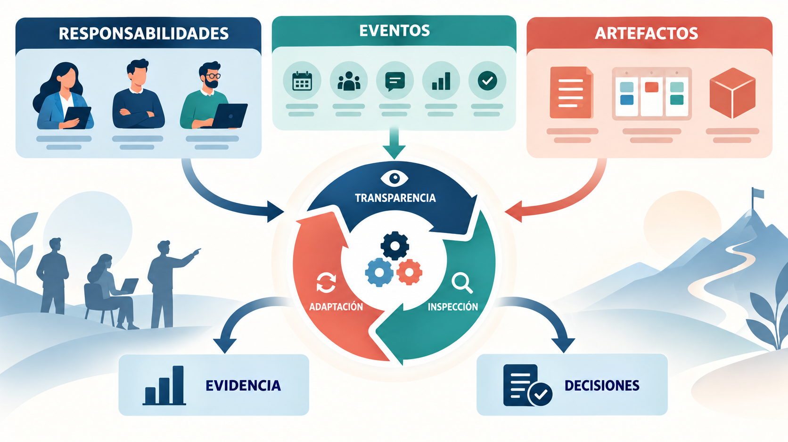
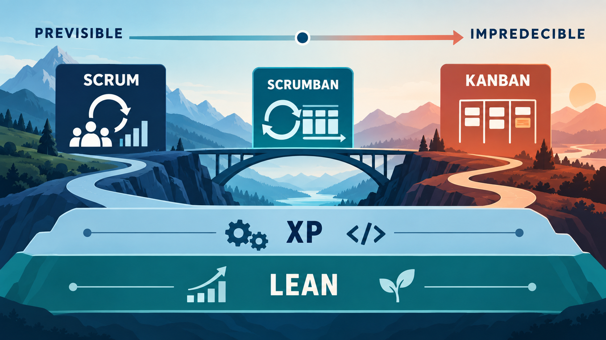

El equipo del asistente universitario con IA ya sabe por qué necesita aprender en ciclos cortos. Ahora debe decidir cómo organizar ese aprendizaje: quién ordena las necesidades, cómo se convierte una idea en un resultado verificable y cuándo se modifica el plan.
En este módulo vamos a recorrer primero Scrum como un sistema completo. Recién después estudiaremos Kanban, XP y Lean. Así, cada nombre aparecerá después de comprender el problema que resuelve.
Cómo recorrer este módulo
- Ubicar cada enfoque en un mapa común.
- Comprender Scrum completo: fundamentos, responsabilidades, artefactos y eventos.
- Comprender Kanban como sistema de gestión del flujo.
- Distinguir las prácticas técnicas de XP y los principios Lean.
- Comparar, combinar y elegir enfoques sin mezclar sus reglas.
1. Panorama de metodologías y marcos ágiles
No existe una única “metodología ágil” que sirva para cualquier situación. Los enfoques de este módulo ponen el foco en preguntas diferentes.
| Enfoque | Pregunta central | Se desarrolla en |
|---|---|---|
| Scrum | ¿Cómo aprender y producir valor mediante ciclos breves con objetivos? | Secciones 2 a 6 |
| Kanban | ¿Cómo hacer visible y mejorar el flujo continuo de trabajo? | Secciones 7 y 8 |
| XP | ¿Qué prácticas técnicas ayudan a cambiar software sin perder calidad? | Sección 9 |
| Lean | ¿Cómo aumentar valor y reducir esperas, errores y trabajo innecesario? | Sección 10 |
Analogía de un hospital. La guardia, una cirugía programada y la mejora de un tratamiento pertenecen al mismo sistema, pero no se organizan igual. En proyectos ocurre lo mismo: la naturaleza de la demanda y el tipo de incertidumbre orientan la elección.
No comparamos todavía roles ni reuniones. Primero vamos a comprender cada enfoque desde adentro.
2. Scrum: visión general y ejemplo de funcionamiento
Scrum es un marco liviano para generar valor mediante soluciones adaptativas a problemas complejos. No describe cada técnica de trabajo: establece una estructura mínima para convertir ideas en resultados, inspeccionarlos y decidir el siguiente paso.
2.1 El ciclo en lenguaje cotidiano
- Ordenar las necesidades conocidas del producto.
- Elegir un objetivo breve y trabajo posible para acercarse a él.
- Construir un resultado utilizable durante un período de un mes o menos.
- Inspeccionar el resultado con personas interesadas.
- Mejorar tanto el producto como la forma de trabajar y repetir el ciclo.
Analogía del GPS. El destino orienta; la ruta actual es un plan. Cada tramo recorrido aporta información real sobre tránsito y desvíos. Recalcular no significa conducir sin rumbo: significa conservar el destino y adaptar el camino con evidencia.
En el asistente universitario, un primer ciclo podría buscar que el sistema responda consultas de inscripción usando un conjunto aprobado de documentos. El resultado deberá ser verificable por estudiantes y por la oficina de alumnos; “investigar modelos” por sí solo no demuestra que exista una capacidad utilizable.

3. Fundamentos de Scrum: empirismo y valores
Scrum se apoya en el empirismo: aprender de la experiencia y decidir con lo observado. Lean aporta foco en lo esencial y reducción del desperdicio.
3.1 Los tres pilares
- Transparencia: el trabajo y sus criterios deben ser visibles y entendibles. Si “respuesta correcta” significa algo distinto para cada persona, la inspección engaña.
- Inspección: se observa el producto y el progreso con frecuencia suficiente para detectar problemas. Inspeccionar no es vigilar personas.
- Adaptación: cuando la evidencia contradice el plan, se ajusta el producto o la forma de trabajar. Observar sin actuar no produce aprendizaje.
Para el asistente, transparencia implica conocer qué documentos usa y qué pruebas debe superar. Inspección significa revisar respuestas con una muestra preparada y con usuarios. Adaptación puede llevar a corregir fuentes, reformular una función o reducir el alcance del ciclo.
3.2 Los cinco valores
Compromiso, foco, apertura, respeto y coraje orientan las decisiones. Coraje puede significar mostrar que una respuesta convincente es incorrecta; apertura, comunicar el hallazgo; respeto, discutir la evidencia sin atacar a quien propuso la solución.
Criterio profesional. Una reunión solo aporta valor si mejora transparencia, inspección o adaptación.
4. Responsabilidades del Scrum Team
Scrum define tres responsabilidades dentro de un único Scrum Team. No son niveles jerárquicos ni cargos presentes en Kanban por obligación.
4.1 Product Owner: orientar valor
El Product Owner responde por maximizar el valor y por gestionar eficazmente el Product Backlog: explicita el Product Goal, comunica y ordena sus elementos y asegura que la lista sea visible y entendida. Puede delegar tareas de redacción, pero conserva la responsabilidad.
En el caso conductor, conversa con estudiantes, oficina de alumnos, seguridad y equipo técnico para decidir qué necesidad atender primero. No asigna cómo programar ni promete resultados que el equipo no evaluó.
4.2 Developers: crear un incremento utilizable
Los Developers son quienes crean cualquier aspecto del incremento. En IA pueden incluir perfiles de datos, software, experiencia de usuario, evaluación y operaciones. Juntos elaboran el plan del Sprint, incorporan calidad, adaptan el plan y se responsabilizan profesionalmente.
El término no significa solamente “programadores”. El conjunto debe poseer o adquirir las capacidades necesarias; aun así puede coordinar dependencias externas de manera visible.
4.3 Scrum Master: ayudar a que Scrum funcione
El Scrum Master responde por establecer Scrum y mejorar la efectividad del equipo. Enseña, facilita, ayuda a remover impedimentos y trabaja con la organización. No distribuye tareas ni recibe el Daily como reporte.
| Situación | Aporte principal |
|---|---|
| Las respuestas sobre becas son menos confiables que las de inscripción. | El Product Owner revisa prioridad y valor con interesados. |
| Hay que mejorar datos, interfaz y pruebas. | Developers adaptan el plan técnico y mantienen la calidad. |
| La validación queda bloqueada por aprobaciones tardías. | El Scrum Master ayuda al equipo y a la organización a mejorar ese sistema. |
5. Artefactos y compromisos de Scrum
¿Cómo sabe el equipo qué mejorar, qué está intentando lograr ahora y qué resultado ya puede utilizarse? Los artefactos de Scrum hacen visible trabajo o valor. Cada uno tiene un compromiso asociado que orienta las decisiones: Product Goal para el Product Backlog, Sprint Goal para el Sprint Backlog y Definition of Done para el Incremento. Un artefacto no es necesariamente un archivo ni una herramienta particular.
5.1 Product Backlog
El Product Backlog es una lista emergente y ordenada de lo necesario para mejorar el producto, y la única fuente del trabajo que realiza el equipo Scrum. El Product Owner responde por su gestión efectiva y puede delegar tareas sin delegar esa responsabilidad. Su contenido se elabora colaborativamente y se refina: los elementos se dividen y reciben detalle, orden y tamaño según lo que se aprende.
Los elementos pueden describirse como historias de usuario, pero Scrum no obliga a usar ese formato ni a estimar con story points. Los Developers que harán el trabajo son responsables de su dimensionamiento. El compromiso asociado es el Product Goal, que describe un estado futuro del producto y orienta el trabajo. En la app bancaria, mejorar la experiencia de pagos seguros da dirección a necesidades de QR y comprobantes sin convertir toda idea nueva en una obligación de construirla. Historias, estimación y refinamiento se profundizan en los módulos siguientes.
5.2 Sprint Backlog
El Sprint Backlog está compuesto por el objetivo del Sprint (el "por qué"), el conjunto de elementos del Product Backlog seleccionados para ese Sprint (el "qué") y un plan de acción para entregar el incremento (el "cómo"). Es un plan elaborado por y para los Developers: es una imagen en tiempo real del trabajo que el equipo planea realizar durante el Sprint, y se actualiza a lo largo de todo el ciclo a medida que se obtiene más información. Si el plan cambia significativamente, el Sprint Backlog se ajusta sobre la marcha. El compromiso asociado a este artefacto es el Objetivo del Sprint (Sprint Goal), una única meta coherente que da propósito a todos los elementos seleccionados y que el equipo puede cumplir incluso si necesita renegociar el alcance exacto con el Product Owner durante el Sprint.
5.3 Incremento
Un Incremento es un paso concreto hacia el objetivo del producto: se integra con los resultados anteriores, se verifica y debe ser utilizable. Puede haber varios incrementos dentro de un Sprint y liberarse valor antes de la Sprint Review. Esa revisión no es una puerta de aprobación necesaria para publicar.
Su compromiso es la Definition of Done (Definición de Terminado), una descripción formal de las medidas de calidad que debe cumplir el producto. Puede incluir revisión de código, pruebas automatizadas satisfactorias, verificaciones de seguridad y documentación pertinente. Si la organización fija un estándar mínimo, el equipo debe respetarlo; si no existe, el equipo Scrum define una DoD adecuada. Los Developers deben cumplirla.
Un elemento que no cumple la DoD no forma parte de un Incremento, no se libera y no se presenta en la Review como terminado: vuelve al Product Backlog para consideración futura. El Product Owner puede aportar feedback y decisiones de valor, pero no convertir en terminado un trabajo que incumple la DoD ni rechazar discrecionalmente esa condición cuando se cumple. Las decisiones de publicación pueden tener otros requisitos de negocio o gobierno, que deben distinguirse del estado de calidad del Incremento.
| Artefacto | Compromiso | Ejemplo |
|---|---|---|
| Product Backlog | Product Goal | Mejorar pagos seguros; contiene necesidades de QR, comprobantes y otras mejoras. |
| Sprint Backlog | Sprint Goal | Permitir confirmar un pago QR y consultar su comprobante; incluye el trabajo seleccionado y el plan de los Developers. |
| Incremento | Definition of Done | La capacidad de pago integrada, probada y utilizable, con las medidas de calidad acordadas. |
6. Eventos de Scrum y desarrollo de un Sprint
Los eventos de Scrum crean una cadencia para inspeccionar y adaptar. Todos ocurren dentro del Sprint; no son ceremonias para controlar ocupación.
6.1 Sprint
Es el período de un mes o menos en el que se crea valor. Su duración permanece estable para aportar ritmo. Durante él no se hacen cambios que pongan en riesgo el Sprint Goal ni se reduce calidad; el alcance puede aclararse y renegociarse al aprender.
6.2 Sprint Planning
El Scrum Team acuerda por qué el Sprint es valioso, qué puede hacerse y cómo se realizará. El resultado inicial es el Sprint Backlog. Seleccionar elementos es un pronóstico; el compromiso es el Sprint Goal.
6.3 Daily Scrum
Durante quince minutos, los Developers inspeccionan el progreso hacia el Sprint Goal y adaptan su plan. Pueden usar las preguntas que les resulten útiles. No es un reporte al Scrum Master ni reemplaza conversar cuando aparece un bloqueo.
6.4 Sprint Review
Scrum Team e interesados inspeccionan el resultado y conversan sobre cambios del contexto. Es una sesión de trabajo, no solo una demostración ni una aprobación para liberar.
6.5 Sprint Retrospective
El Scrum Team analiza cómo aumentar calidad y efectividad y decide mejoras. Para un Sprint de un mes tiene un máximo de tres horas; en Sprints más cortos suele durar menos.
6.6 Caso completo: un Sprint del asistente universitario
- Objetivo: responder consultas frecuentes de inscripción con información aprobada y mostrar la fuente utilizada.
- Plan: preparar veinte consultas representativas, conectar los documentos vigentes, construir la interacción y registrar respuestas incorrectas.
- Inspección diaria: el equipo detecta que varios documentos usan nombres distintos para el mismo trámite y ajusta el plan.
- Incremento: una versión utilizable cumple la Definition of Done y supera el umbral acordado en la muestra. El umbral es didáctico y no garantiza desempeño futuro.
- Review: estudiantes y personal prueban el resultado; aparece la necesidad de indicar cuándo la información puede estar desactualizada.
- Retrospectiva: el equipo decide involucrar antes a la persona que valida documentos.
Criterio profesional. En IA, un experimento puede enseñar que una alternativa no funciona. Para llamarlo incremento de Scrum, el resultado debe ser utilizable y cumplir la Definition of Done.
7. Kanban: origen, principios y visualización
Kanban es una estrategia para optimizar el flujo de valor mediante un sistema de trabajo visible. Puede aplicarse sobre un proceso existente y no exige Product Owner, Scrum Master, Sprints ni una reunión particular.
7.1 De la señal industrial al trabajo del conocimiento
El término proviene de señales visuales utilizadas en sistemas productivos japoneses. En trabajo del conocimiento, las tarjetas hacen visible una demanda que no se puede observar físicamente. La inspiración histórica no vuelve idénticos a una fábrica y a un equipo de software.
7.2 Qué debe mostrar un tablero
Un tablero representa estados reales y políticas. Para el asistente podríamos usar “Opciones”, “Preparado”, “En construcción”, “En validación” y “Terminado”. Una tarjeta bloqueada permanece visible; moverla a una columna de espera no elimina el trabajo iniciado.
El sistema necesita una definición clara de cuándo una tarjeta entra y sale de cada estado. Las columnas por sí solas no constituyen Kanban.
Analogía de una autopista. Agregar autos a un embotellamiento no aumenta la velocidad de llegada. Limitar el ingreso permite terminar lo iniciado y revela dónde se forma la cola.
8. Flujo de trabajo y límites WIP en Kanban
Un límite WIP establece cuántos ítems pueden permanecer iniciados en una etapa o en todo el sistema. Si Desarrollo admite tres y contiene tres, no ingresa una cuarta tarjeta. Si una pasa a Testing y quedan dos, el límite de Desarrollo permite incorporar otra; pero si Testing está saturado, la política del equipo puede priorizar ayudar a terminar antes de iniciar más. Son dos acuerdos relacionados: limitar la cantidad de trabajo y decidir cómo atender el cuello de botella. Mover una tarjeta bloqueada no la convierte en trabajo terminado.
Una referencia útil es la Ley de Little: en condiciones de estabilidad y con límites del sistema consistentes, el trabajo en curso promedio equivale a la tasa promedio de finalización multiplicada por el tiempo promedio dentro del sistema. Si medimos desde que se inicia el trabajo hasta que termina, ese tiempo es Cycle Time. Si contamos desde la solicitud, medimos un horizonte de Lead Time que también puede incluir la espera anterior al inicio. Es indispensable mantener los mismos límites al comparar indicadores.
Por ejemplo, un flujo estable con seis elementos en curso en promedio y dos finalizaciones por día tiene un tiempo promedio dentro del sistema de tres días. Es una relación entre promedios, no una fecha garantizada para cada tarjeta. Si el throughput se mantiene, reducir WIP se relaciona con un tiempo promedio menor; la ley no demuestra por sí sola que bajar cualquier límite aumente la productividad. Un límite demasiado bajo también puede impedir aprovechar capacidad.
El problema práctico aparece cuando iniciar muchas tareas agrega esperas, cambios de contexto y trabajo parcialmente terminado. Un equipo puede responder colaborando para revisar código pendiente o completar pruebas antes de abrir otra funcionalidad. El límite WIP ayuda a hacer visible esa decisión y su efecto debe comprobarse con datos, no suponerse automáticamente beneficioso.
Los límites WIP también cumplen una función diagnóstica: cuando una columna se satura repetidamente contra su límite, esto es una señal visual e inmediata de que existe un cuello de botella en esa etapa del proceso (por ejemplo, si la columna "Testing" se satura constantemente, probablemente el equipo necesite más capacidad de testing, o el proceso de pruebas debería automatizarse más). Esta es la esencia de la "gestión del flujo" en Kanban: en lugar de gestionar personas o tareas individuales, se gestiona el movimiento agregado del trabajo a través del sistema, optimizando métricas como el lead time (tiempo desde la solicitud hasta la entrega, con límites de medición explícitos) y el throughput (cantidad de elementos completados por unidad de tiempo).
9. Extreme Programming (XP) y prácticas de desarrollo
¿De qué sirve entregar con frecuencia si cada cambio rompe una funcionalidad anterior? XP aborda la capacidad de construir y cambiar software con confianza. No es solamente una colección de técnicas: también integra valores, colaboración estrecha con el cliente, planificación y entregas pequeñas. En esta materia profundizamos sus prácticas de ingeniería porque complementan los mecanismos de gestión estudiados.
XP contempla funciones de cliente o representación del negocio, programación, pruebas y acompañamiento del proceso. La organización concreta puede variar según la versión y adopción del enfoque; no impone el conjunto Product Owner, Scrum Master y Developers de Scrum. Un equipo puede adoptar prácticas de XP dentro de Scrum o Kanban sin afirmar que por eso implementa XP completo.
Extreme Programming, o Programación Extrema (XP), fue creada por Kent Beck a fines de la década de 1990, mientras trabajaba en el proyecto Chrysler Comprehensive Compensation System. A diferencia de Scrum y Kanban, que se concentran principalmente en la organización del proceso de trabajo, XP pone el foco en las prácticas técnicas de ingeniería de software: cómo se escribe, se prueba, se integra y se diseña el código. Beck partió de la observación de que muchos proyectos fallaban no por falta de buena gestión, sino por prácticas técnicas deficientes que generaban software frágil, difícil de modificar y plagado de errores. XP toma varias prácticas de ingeniería que ya existían de forma dispersa en la industria y las combina, llevándolas —de ahí el nombre "extrema"— a su expresión más disciplinada y consistente. A continuación se desarrollan las prácticas técnicas más representativas de XP.
9.1 Programación en pares (Pair Programming)
En la programación en pares, dos desarrolladores trabajan juntos, de forma simultánea, en la misma tarea y frente a la misma computadora: uno de ellos, llamado "driver" (conductor), escribe el código, mientras el otro, llamado "navigator" (navegante), revisa cada línea en tiempo real, piensa en la estrategia general, detecta errores potenciales y sugiere mejoras. Los roles se intercambian periódicamente. Aunque a primera vista pueda parecer que esta práctica duplica el costo de desarrollo (dos personas dedicadas a una sola tarea), el trabajo en pares puede ayudar a detectar defectos, revisar el diseño y transferir conocimiento. Su beneficio depende de la tarea, la colaboración y la experiencia del equipo; no garantiza una reducción fija de errores. También funciona como un mecanismo de aprendizaje entre miembros del equipo (especialmente valioso para integrar a desarrolladores junior, quienes aprenden prácticas y convenciones del equipo trabajando codo a codo con desarrolladores más experimentados).
9.2 Desarrollo guiado por pruebas (Test-Driven Development, TDD)
TDD es una práctica en la que el desarrollador escribe primero una prueba automatizada (test) que define el comportamiento esperado de una porción de código que todavía no existe, ejecuta esa prueba y verifica que falle (porque el código aún no está implementado), luego escribe el código mínimo necesario para que la prueba pase, y finalmente refactoriza el código para mejorar su diseño interno sin alterar su comportamiento externo. Este ciclo se conoce popularmente como "rojo-verde-refactor" (red-green-refactor), en referencia a los colores que suelen usar las herramientas de testing para indicar pruebas fallidas (rojo) y exitosas (verde). Un ejemplo concreto: antes de implementar una función que calcula el descuento aplicable a una compra según el monto total, un desarrollador que practica TDD escribiría primero una prueba que afirma "si el monto es 1000, el descuento debe ser 100" (10%), vería que esa prueba falla porque la función no existe todavía, implementaría el código mínimo para que la prueba pase, y luego mejoraría el diseño interno del código sin romper esa prueba ni las anteriores. El beneficio principal de TDD es que genera una batería de pruebas automatizadas que actúa como una red de seguridad: un cambio que rompe un comportamiento cubierto por esas pruebas puede detectarse al ejecutarlas. Los casos no contemplados requieren otras verificaciones y las pruebas deben mantenerse, lo cual da al equipo la confianza necesaria para modificar y mejorar el código con frecuencia, con mayor evidencia sobre los comportamientos verificados, sin asumir que desaparece todo riesgo de defectos (a esto se lo llama, en el contexto ágil, "código con licencia para cambiar").
9.3 Integración continua (Continuous Integration, CI)
La integración continua es la práctica de fusionar (mergear) el código de todos los desarrolladores del equipo en un repositorio compartido con extrema frecuencia —idealmente varias veces al día—, ejecutando automáticamente, en cada integración, una batería de pruebas automatizadas que verifica que el nuevo código no rompió nada de lo que ya funcionaba. Esta práctica se opone directamente al patrón tradicional (y problemático) de mantener ramas de desarrollo individuales o de equipo que se integran recién al final de un ciclo largo, lo cual genera lo que se conoce como "infierno de integración" (integration hell): conflictos de código masivos, difíciles de resolver, y errores que se descubren tarde, cuando ya es costoso corregirlos. Herramientas como Jenkins, GitHub Actions, GitLab CI o CircleCI automatizan este proceso: cada vez que un desarrollador sube (push) su código, se dispara automáticamente un proceso que compila el proyecto, ejecuta las pruebas automatizadas y notifica inmediatamente si algo falló, permitiendo corregir el problema en minutos u horas en lugar de semanas.
9.4 Refactoring (Refactorización)
El refactoring es el proceso disciplinado de mejorar la estructura interna, la legibilidad y el diseño del código existente, sin alterar su comportamiento externo observable. La idea central es que el código, al igual que cualquier estructura que se modifica con el tiempo, tiende a acumular lo que Ward Cunningham denominó "deuda técnica": atajos, duplicaciones y decisiones de diseño que fueron razonables en su momento pero que, sin mantenimiento, dificultan cada vez más agregar nuevas funcionalidades. Refactorizar de forma continua y en pequeños pasos —apoyándose siempre en una batería sólida de pruebas automatizadas, típicamente generada mediante TDD, que ayuda a detectar cambios de comportamiento, sin garantizar ausencia de defectos— evita que esa deuda técnica se acumule hasta un punto en el que el sistema se vuelve prácticamente inmodificable. Un ejemplo típico de refactoring es extraer un bloque de código duplicado en varias partes del sistema hacia una única función reutilizable, o renombrar variables y funciones con nombres poco claros por nombres que expresan mejor su propósito.
9.5 Otras prácticas de XP
Además de las cuatro prácticas centrales desarrolladas arriba, XP incluye otras prácticas complementarias que conviene mencionar: el diseño simple (implementar siempre la solución más simple posible que satisfaga los requisitos actuales, evitando la sobreingeniería especulativa); la propiedad colectiva del código (cualquier miembro del equipo puede modificar cualquier parte del código, sin "dueños" exclusivos de módulos, lo cual reduce cuellos de botella y silos de conocimiento); los estándares de codificación compartidos por todo el equipo (para que el código se lea de forma consistente, como si lo hubiera escrito una sola persona); el ritmo sostenible (evitar las horas extra sistemáticas, ya que la fatiga acumulada deteriora la calidad del código y la productividad a mediano plazo); y las entregas pequeñas y frecuentes (releases pequeños que ponen software funcionando en manos de los usuarios lo antes posible, similar en espíritu a la entrega incremental de Scrum).
9.6 XP e inteligencia artificial
Las prácticas técnicas también ayudan en productos con IA, pero debemos distinguir tipos de prueba. Un test automatizado puede verificar que una API respete permisos y formatos; un conjunto de evaluación examina la calidad de respuestas sobre casos conocidos. Ninguno demuestra por sí solo ausencia de errores en todas las consultas futuras.
Un asistente generativo puede proponer tests o revisar código, pero el equipo conserva el criterio, verifica los resultados y protege datos sensibles. Eso no reemplaza el aprendizaje compartido de la programación en pareja.
10. Lean aplicado al desarrollo de software
El pensamiento Lean, cuya raíz —igual que Kanban— se encuentra en el Sistema de Producción Toyota, fue adaptado al desarrollo de software principalmente por Mary y Tom Poppendieck a comienzos de la década de 2000, en su influyente libro "Lean Software Development: An Agile Toolkit". La idea central del pensamiento Lean es maximizar el valor entregado al cliente mientras se minimiza el desperdicio (en japonés, "muda") en todas sus formas. Los Poppendieck tradujeron los célebres "siete desperdicios" identificados originalmente en la manufactura por Taiichi Ohno a equivalentes específicos del desarrollo de software, lo cual constituye una de las herramientas didácticas más útiles para que un equipo identifique ineficiencias en su propio proceso.
10.1 Los siete desperdicios aplicados a desarrollo de software
- Trabajo parcialmente hecho (código a medio terminar): código escrito pero no integrado, no testeado o no desplegado, que no genera ningún valor real hasta que se completa. Un módulo desarrollado al 80% que queda "congelado" porque el equipo cambió de prioridad es desperdicio puro: consumió recursos y no entrega ningún valor mientras permanece incompleto.
- Funcionalidades extra (sobreproducción): construir funcionalidades que el usuario no pidió, no necesita o no usará, basándose en suposiciones no validadas sobre lo que "podría" ser útil en el futuro. Es habitual en equipos que, por exceso de celo técnico, agregan opciones de configuración, parámetros o casos de uso especulativos que rara vez se utilizan, y que además incrementan la complejidad de mantenimiento del sistema.
- Reaprendizaje (relearning): el tiempo perdido cuando el conocimiento generado durante el desarrollo no queda documentado ni compartido, y el equipo (u otras personas) deben volver a investigar o redescubrir algo que ya se había resuelto anteriormente. Por ejemplo, un desarrollador que resuelve un problema complejo de integración con una API externa, pero no documenta la solución, obliga a que un colega enfrente el mismo problema desde cero meses después.
- Traspasos (handoffs): la pérdida de contexto, información y motivación que ocurre cada vez que el trabajo pasa de una persona o equipo a otro sin comunicación directa suficiente —por ejemplo, cuando un analista de negocio redacta requerimientos que luego entrega, sin más diálogo, a un equipo de desarrollo separado geográfica u organizacionalmente—. Cada traspaso introduce el riesgo de malentendidos y la pérdida de matices que solo el autor original conocía.
- Cambios de tarea (task switching): el costo cognitivo y de productividad que genera que una persona trabaje simultáneamente en múltiples proyectos o tareas no relacionadas, un problema directamente vinculado con la ausencia de límites WIP explicados en la sección de Kanban. Cada cambio de contexto tiene un costo real de "recarga mental" que reduce la eficiencia neta del trabajo.
- Retrasos (delays): el tiempo que una tarea pasa esperando —esperando una aprobación, esperando que otro equipo libere un recurso, esperando la disponibilidad de un ambiente de pruebas— sin que nadie esté trabajando activamente en ella. Estos tiempos de espera suelen ser, en la práctica, la porción más grande del lead time total de una tarea, muy superior al tiempo de trabajo activo.
- Defectos: errores, bugs o fallas que se detectan tarde en el ciclo de desarrollo (o, peor aún, ya en producción, afectando a usuarios reales), y cuyo costo de corrección puede aumentar al propagarse el defecto y ampliar su impacto cuanto más tarde se detectan respecto del momento en que fueron introducidos. Este desperdicio es la razón por la cual prácticas como TDD e integración continua —vistas en la sección de XP— son tan valoradas desde la perspectiva Lean: detectan defectos casi en el instante en que se producen.
10.2 Principios Lean aplicados al software
Más allá de los siete desperdicios, los Poppendieck sintetizaron siete principios Lean adaptados al desarrollo de software, que conviene mencionar brevemente porque atraviesan de forma transversal a todos los marcos ágiles estudiados en este módulo: eliminar el desperdicio; amplificar el aprendizaje (mediante ciclos cortos de retroalimentación, como los que ofrecen Scrum y XP); decidir lo más tarde posible (postergar decisiones irreversibles hasta tener la mayor información posible, en lugar de comprometerse anticipadamente sobre supuestos inciertos); entregar lo más rápido posible (para generar valor y aprendizaje real cuanto antes); dar autonomía al equipo (empoderar a quienes hacen el trabajo para tomar decisiones, en lugar de centralizar el control); construir integridad (tanto conceptual —coherencia del producto desde la perspectiva del usuario— como técnica —arquitectura sólida y mantenible—); y ver el todo (optimizar el sistema completo, no partes aisladas, evitando el error común de mejorar un área a costa de perjudicar el flujo general).
10.3 Caso real: Toyota y la calidad dentro del proceso
Toyota explica su sistema de producción a partir de dos pilares: jidoka, detener y atender anormalidades para evitar que los defectos continúen, y Just in Time, producir lo necesario, cuando se necesita y en la cantidad necesaria. También destaca la mejora cotidiana. Es un caso industrial real, no un equipo de software que utiliza Scrum. Fuente: Toyota Production System, consulta del 15 de septiembre de 2026.
Aplicación razonada: si una prueba importante falla, seguir agregando funcionalidades puede ampliar el retrabajo. Investigar la falla antes de continuar traduce una preocupación por calidad en una decisión de trabajo. La transferencia es conceptual: las necesidades digitales pueden cambiar y el proceso de una fábrica no se copia literalmente a un equipo de producto.
11. Scrumban y Scrum con Kanban
Scrumban es un enfoque híbrido que combina elementos de Scrum y de Kanban, buscando capturar lo mejor de ambos mundos. Surgió originalmente como una estrategia de transición: equipos que ya trabajaban con Scrum, y que deseaban migrar gradualmente hacia Kanban (o viceversa), comenzaron a experimentar con una combinación de ambos, y esa combinación terminó consolidándose como un enfoque legítimo en sí mismo, útil para analizar el trabajo de mantenimiento de software y de soporte, donde el trabajo no siempre llega en forma de historias planificables con anticipación sino como un flujo constante e impredecible de tickets, incidentes o pequeñas mejoras.
En una adopción de Scrumban pueden conservarse instancias de planificación, coordinación diaria y retrospectiva, junto con políticas de extracción de trabajo y límites WIP. No existe un único conjunto universal de roles y cadencias bajo esa etiqueta: el equipo debe explicitar qué conserva, qué cambia y por qué. Por ejemplo, un servicio de soporte puede trabajar con flujo continuo y reposición bajo demanda, y mantener una retrospectiva quincenal sin afirmar que esa reunión convierte al servicio en Scrum.
También puede utilizarse Scrum con Kanban: se conservan las responsabilidades, eventos, artefactos y reglas de Scrum y se incorporan prácticas de flujo. Un tablero y límites WIP no obligan a abandonar Scrum ni convierten automáticamente el sistema en otro marco. En Scrum, lo que se protege durante el Sprint es su objetivo; el alcance del trabajo seleccionado puede clarificarse y renegociarse con el Product Owner conforme se aprende.
12. Otros enfoques ágiles: Crystal, FDD y DSDM
Además de los marcos desarrollados en profundidad en este módulo, existen otros enfoques ágiles con propuestas específicas de organización del trabajo, pero que resulta importante conocer al menos de forma conceptual, tanto por su valor histórico como porque algunas de sus ideas fueron incorporadas, de forma implícita, en otros enfoques.
12.1 Crystal
Crystal, desarrollado por Alistair Cockburn (uno de los firmantes originales del Manifiesto Ágil), no es en realidad un único marco de trabajo sino una familia de metodologías, cada una identificada por un color (Crystal Clear, Crystal Yellow, Crystal Orange, Crystal Red, entre otras), seleccionada según el tamaño del equipo y la criticidad del sistema que se está construyendo (por ejemplo, un sistema cuyo fallo puede costar vidas humanas requiere más rigor formal que una aplicación interna de bajo riesgo). La premisa central de Cockburn es que no existe una única metodología correcta para todos los proyectos, sino que el proceso debe "calibrarse" según el contexto específico, priorizando siempre la comunicación cara a cara, la entrega frecuente y la reflexión periódica del equipo por encima de la documentación exhaustiva o los procesos formales.
12.2 Feature Driven Development (FDD)
FDD, desarrollado por Jeff De Luca y Peter Coad a fines de los años 90, organiza todo el proceso de desarrollo alrededor de la noción de "característica" o funcionalidad (feature): una pequeña pieza de funcionalidad valiosa para el cliente, expresada típicamente en la forma "acción, resultado, para/de/a un objeto" (por ejemplo, "calcular el total de una factura"). FDD se estructura en cinco procesos, con ciclos repetidos de diseño y construcción por característica: desarrollar un modelo general del sistema, construir una lista de características, planificar por característica, diseñar por característica y construir por característica. A diferencia de Scrum, FDD pone un énfasis mucho mayor en el modelado de dominio previo y en roles técnicos específicos (como el "Class Owner", propietario de una clase de código), lo que lo hace más apto para proyectos grandes con arquitecturas complejas que requieren coordinación técnica cuidadosa entre múltiples equipos.
12.3 Dynamic Systems Development Method (DSDM)
DSDM es uno de los marcos ágiles más antiguos, originado en el Reino Unido en 1994, incluso antes del Manifiesto Ágil de 2001, como una respuesta estructurada a las limitaciones del desarrollo rápido de aplicaciones (Rapid Application Development, RAD) de la época. DSDM se distingue por un principio poco común entre los marcos ágiles: fija de antemano el tiempo y el costo del proyecto, y preserva la calidad acordada y permite ajustar el alcance priorizado. No significa que toda gestión predictiva deje libres el tiempo y el costo. Esto se apoya en la técnica de priorización MoSCoW (Must have, Should have, Could have, Won't have), que clasifica los requisitos según su criticidad, permitiendo recortar funcionalidades de menor prioridad si el tiempo se agota, sin comprometer la fecha de entrega ni el presupuesto. DSDM es particularmente utilizado en proyectos con plazos y presupuestos rígidos e innegociables, típicamente en el sector público o en contratos con penalidades estrictas por incumplimiento de fecha.
| Marco | Autor(es) / origen | Idea central | Contexto de uso más apto |
|---|---|---|---|
| Crystal | Alistair Cockburn | Familia de metodologías "calibradas" según tamaño de equipo y criticidad del sistema | Organizaciones con proyectos de distinta criticidad que necesitan un enfoque flexible y adaptable |
| Feature Driven Development (FDD) | Jeff De Luca y Peter Coad | Proceso organizado alrededor de funcionalidades (features) concretas y valiosas para el cliente | Proyectos grandes, con arquitecturas complejas, que requieren fuerte modelado de dominio |
| Dynamic Systems Development Method (DSDM) | Consorcio DSDM (Reino Unido, 1994) | Fija tiempo y costo; el alcance es la variable ajustable, priorizado con MoSCoW | Proyectos con plazos y presupuestos rígidos e innegociables (sector público, contratos con penalidades) |
13. Comparación entre metodologías y marcos ágiles
Habiendo desarrollado en profundidad Scrum, Kanban, XP, Lean y Scrumban, resulta útil sintetizar sus diferencias y similitudes en una tabla comparativa que permita visualizar de un vistazo las características distintivas de cada enfoque. Esta comparación será la base sobre la que se apoyará el criterio de selección desarrollado en la sección final del módulo.
Para facilitar la lectura, la comparación se presenta en dos tablas que mantienen las mismas dimensiones. Leé una misma fila en ambas para contrastar los cinco enfoques.
| Dimensión | Scrum | Kanban | Extreme Programming (XP) |
|---|---|---|---|
| Naturaleza | Marco de trabajo con responsabilidades, eventos y artefactos definidos | Método de gestión y mejora del flujo | Enfoque de desarrollo que integra valores, colaboración, planificación y prácticas técnicas |
| Unidad de planificación | Sprint de duración fija de un mes o menos | Flujo con reposición de trabajo según políticas y capacidad | Iteraciones y entregas pequeñas; no depende de adoptar Scrum |
| Roles definidos | Product Owner, Scrum Master, Developers | Parte de responsabilidades existentes; pueden evolucionar sin exigir Scrum Master | Funciones de cliente, desarrollo, pruebas y acompañamiento; no exige Scrum Master |
| Mecanismo de control del trabajo | Objetivos, calidad e inspección y adaptación; el alcance seleccionado es un pronóstico | Control del WIP, políticas explícitas, métricas y feedback | Feedback de negocio y técnico, planificación y construcción con calidad |
| Cambio de alcance durante el ciclo | Puede clarificarse y renegociarse con el Product Owner sin poner en peligro el Sprint Goal | Se gestiona con políticas explícitas, capacidad y límites WIP; no implica interrumpir toda tarea iniciada | Se revisa mediante colaboración, prioridades y planificación de iteraciones |
| Foco principal | Gestión del proceso de trabajo en equipo | Optimización y visualización del flujo | Calidad técnica del código y del producto |
| Caso de uso típico | Desarrollo de producto con backlog priorizable en ciclos | Equipos de soporte, mantenimiento o flujo de trabajo impredecible | Cualquier equipo que busca elevar su disciplina de ingeniería |
| Dimensión | Lean | Scrumban |
|---|---|---|
| Naturaleza | Pensamiento y principios de gestión | Combinación con acuerdos específicos de cadencia y flujo |
| Unidad de planificación | No prescribe una unidad de tiempo específica | Según los acuerdos de adopción |
| Roles definidos | No prescribe los roles de Scrum | No tiene una lista universal; las responsabilidades deben explicitarse |
| Mecanismo de control del trabajo | Valor, aprendizaje y mejora del sistema completo | Políticas de flujo y cadencias coherentes con la demanda |
| Cambio de alcance durante el ciclo | Decidir responsablemente con información suficiente y atender al valor | Depende de los objetivos y políticas acordados |
| Foco principal | Eliminación de desperdicio y maximización de valor | Flujo continuo con estructura de mejora periódica |
| Caso de uso típico | Cualquier organización que busca mejorar eficiencia general | Equipos con mezcla de trabajo planificado y reactivo |
14. Selección del enfoque y caso resuelto
Comprender en profundidad cada marco de trabajo es solo la mitad del aprendizaje: la otra mitad, igualmente importante para un profesional de sistemas, es desarrollar el criterio necesario para decidir cuál aplicar —o cómo combinarlos— en una situación real. No existe un marco "superior" en abstracto; existe, en todo caso, un marco más adecuado para un conjunto de condiciones específicas. A continuación se detallan los criterios prácticos más relevantes que un profesional debería considerar al momento de elegir (o recomendar) un enfoque ágil.

14.1 Previsibilidad y naturaleza de la demanda de trabajo
Si el trabajo del equipo puede agruparse razonablemente en lotes planificables con cierta anticipación —por ejemplo, el desarrollo de nuevas funcionalidades de un producto digital con un roadmap medianamente estable—, Scrum resulta muy apropiado, porque el objetivo de Sprint y la inspección frecuente aportan foco y oportunidades de adaptación. En cambio, si el trabajo llega de forma continua e impredecible —tickets de soporte, incidentes de producción, solicitudes urgentes de distintas áreas de la organización—, forzar ese trabajo dentro de Sprints fijos suele generar fricción constante (interrupciones que ponen en riesgo el objetivo del Sprint y demandan renegociaciones frecuentes); en ese escenario, Kanban o Scrumban se adaptan mucho mejor, porque su lógica de flujo continuo y extracción bajo demanda permite gestionar la demanda mediante políticas explícitas de flujo.
14.2 Madurez y estructura del equipo
Scrum exige un nivel considerable de disciplina, coordinación y compromiso colectivo: roles claros, eventos que se respetan y equipos multifuncionales con la totalidad de las habilidades necesarias. Un equipo pequeño, recién formado, con roles poco definidos, o distribuido en distintas áreas sin autoridad para autogestionarse, puede tener dificultades para sostener la disciplina que Scrum exige. Kanban, en cambio, al no imponer roles nuevos y permitir una adopción gradual "por encima" del proceso ya existente, resulta menos disruptivo para equipos en proceso de maduración, o para equipos técnicos que ya tienen una estructura de trabajo consolidada y no ven razones para reorganizarse por completo. Independientemente del marco de gestión elegido, las prácticas técnicas de XP (TDD, integración continua, refactoring, pair programming) son casi siempre recomendables como complemento, porque abordan la calidad del producto —una dimensión ortogonal a cómo se organiza el trabajo del equipo— y pueden adoptarse dentro de un Sprint de Scrum o de un flujo Kanban indistintamente.
14.3 Cultura organizacional y grado de autonomía disponible
Scrum requiere que la organización tolere —e idealmente fomente— la autogestión del equipo, la ausencia de un jefe de proyecto tradicional que asigne tareas, y cierta resistencia a interrumpir Sprints en curso con pedidos urgentes. En organizaciones muy jerárquicas, con estructuras de control centralizado y baja tolerancia a la autonomía de los equipos técnicos, la adopción de Scrum "de libro" suele fracasar o degenerar en un "Scrum de nombre" que en la práctica opera como una gestión tradicional disfrazada de ágil (fenómeno conocido informalmente como "ScrumButt" o "Zombie Scrum"). Kanban, al respetar explícitamente los roles y la estructura organizacional existente como punto de partida, suele encontrar menor resistencia inicial en contextos organizacionales más conservadores, siendo además una puerta de entrada más suave hacia la agilidad, que puede evolucionar más adelante hacia prácticas más estructuradas si la organización lo permite.
14.4 Restricciones de tiempo, costo y alcance
Con fecha y presupuesto firmes, necesitamos distinguir alcance obligatorio de alcance negociable y comprobar si el resultado mínimo es viable. DSDM ofrece un tratamiento explícito de estas restricciones y la priorización MoSCoW; esas prácticas también pueden incorporarse en otros enfoques sin contradicción con Scrum. Ningún marco elimina la necesidad de analizar capacidad, riesgos y dependencias antes de prometer una entrega.
En software de alta criticidad, los requisitos de seguridad, validación, trazabilidad y cumplimiento provienen del dominio y de las obligaciones aplicables. Crystal ayuda a pensar la adecuación del proceso a tamaño y criticidad, pero una variante o etiqueta metodológica no certifica seguridad ni reemplaza controles de ingeniería. La elección debe mostrar cómo se cumplen esas obligaciones dentro del sistema de trabajo.
14.5 Combinación pragmática de enfoques
Los enfoques no son necesariamente excluyentes. Un equipo puede aplicar Scrum con prácticas Kanban y técnicas de XP, orientado por principios Lean. La combinación debe conservar reglas coherentes: si mantiene Scrum completo, podemos describirlo como Scrum con Kanban; si cambia su estructura, debe explicar los acuerdos específicos en lugar de presentar la mezcla como Scrum completo. La selección no consiste en reunir prácticas atractivas, sino en conectar cada una con un problema observado y comprobar si mejora el sistema.
14.6 Caso resuelto: elegir un enfoque para un equipo con producto e incidentes
El equipo de seis personas que desarrolla la app bancaria debe mejorar los pagos y atender incidentes de producción. El trabajo urgente interrumpe el objetivo de Sprint, Testing acumula tareas y la integración manual introduce defectos. ¿Debe abandonar Scrum? Primero necesita distinguir las causas.
- Diagnosticar la demanda. Durante dos semanas registra entradas, urgencias reales, tiempo de espera en Testing y defectos. Distingue incidentes críticos de pedidos que pueden esperar. El problema no es simplemente “demasiado trabajo”: hay interrupciones y un cuello de botella.
- Conservar Scrum de forma coherente. Mantiene Product Owner, Scrum Master y Developers; los tres artefactos y sus compromisos; Planning, Daily, Review y Retrospectiva dentro del Sprint. Acuerda un objetivo alcanzable y pronostica el trabajo considerando la demanda reactiva observada. No promete que cada elemento seleccionado quedará terminado.
- Agregar políticas Kanban. Visualiza el trabajo planificado y los incidentes en un mismo sistema, establece límites WIP y explicita qué califica como urgente. Cuando llega una urgencia, Developers y Product Owner revisan el impacto y renegocian alcance sin poner en peligro el objetivo del Sprint. Si lo vuelve obsoleto, el Product Owner puede cancelar el Sprint; no es una autorización para ignorar el objetivo.
- Destrabar y prevenir. Si Testing llega al límite, el equipo ayuda a terminar antes de iniciar más tareas. Incorpora integración continua, pruebas automatizadas y trabajo en pares donde aporte valor. Estas prácticas de XP atienden la fragilidad técnica, no sustituyen la gestión de prioridades.
- Comprobar la decisión. Durante cuatro semanas observa tiempo de ciclo, entregas, defectos e impacto de las urgencias sobre el objetivo. Si el trabajo reactivo domina de forma sostenida, evalúa separar un servicio con Kanban o adoptar otro diseño explícito. Ajustar requiere evidencia, no defender la etiqueta inicial.
Decisión: Scrum complementado con prácticas Kanban y de XP, porque todavía sirve el objetivo de producto y se conserva el marco completo. No lo llamamos automáticamente Scrumban. La decisión cambiaría si dejara de ser útil trabajar por Sprints o si se modificaran elementos esenciales de Scrum.
Fuente normativa de Scrum: The Scrum Guide, edición 2020, de Ken Schwaber y Jeff Sutherland. Sus reglas se distinguen aquí de ejemplos y prácticas opcionales. Consulta: 15 de septiembre de 2026.
Recursos audiovisuales sugeridos
Estos recursos complementan las explicaciones y permiten observar otras presentaciones de los conceptos. El contenido esencial está desarrollado en este documento.
-
A Brief Overview of the Scrum Framework
Scrum.org presenta en pocos minutos cómo se relacionan responsabilidades, eventos y artefactos; sirve para reconstruir el marco como sistema antes de comparar alternativas. -
What is Scrum: An Introduction to the Scrum Framework
La explicación oficial profundiza empirismo, roles, eventos, artefactos y mitos frecuentes, y muestra cómo Scrum puede complementarse con Kanban y prácticas técnicas.
Síntesis del módulo
En este módulo recorrimos primero Scrum como sistema: empirismo y valores, responsabilidades, artefactos, compromisos y eventos. El Sprint del asistente universitario mostró cómo un objetivo conecta trabajo, evidencia y adaptación sin prometer que todo experimento producirá un incremento útil.
Después estudiamos Kanban para gestionar flujo, XP para sostener capacidad de cambio y Lean para pensar valor y desperdicio. También ubicamos Scrumban y otros enfoques como ampliación.
La elección profesional parte del problema: demanda, incertidumbre, habilidades, riesgos y restricciones. Un nombre o una herramienta no garantiza agilidad.
Conexión del recorrido. Ya comprendemos cómo se organiza el trabajo. En el Módulo 3 convertiremos necesidades en objetivos, backlog, criterios y experimentos de producto.